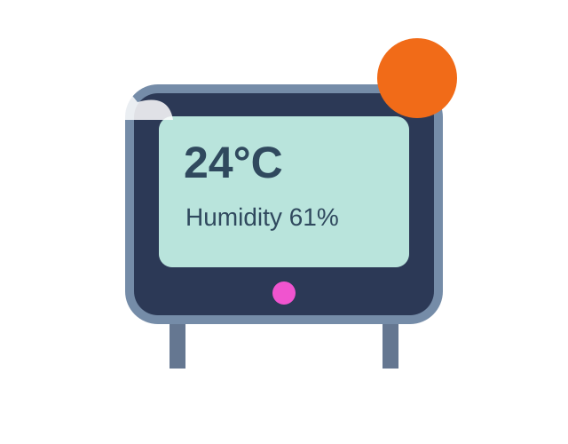
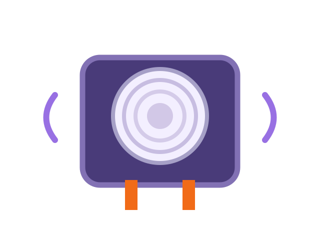

01 / 03BEGINNER
Weather Station
Measure temperature and humidity using Arduino and a DHT11 sensor.
Open project ↗Learn to build real projects with simple hardware, software, and Arduino.
Projects for every skill level.

01 / 03Measure temperature and humidity using Arduino and a DHT11 sensor.
Open project ↗
02 / 03Learn the basics, follow a project, and make it your own.
Explore projects ↗Choose a project for your skill level.
Build with sensors, circuits, and code.
Use what you learned to build something new.
Type to find projects • Enter to open project library